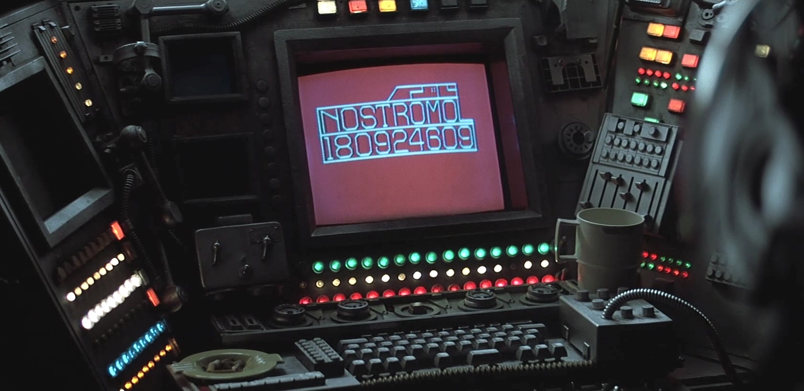

¡Hola! Me llamo FÉLIX OLMOS y soy informatico. Me dedico a la informática desde hace mas de 17 años. En los cuales he estado en empresas como Vodafone (durante 7 años y medio), como jefe de turno a cargo de operadores; tambien en un departamento de Mediacion, Tarifiacion y Facturación. Tambien como programador de los sistemas de monitorización (HP Openview IT/O basado en programación en shell script). Tambien estuve en Uni2 (durante 2 años y medio) primero como operador de sistemas y después como administrador de Backup y Solaris. He estado tambien en Roche, BBVA ... e considero una persona responsable, que se involucra en lo que hace, capaz de trabajar tanto solo como en equipo, proactivo....
CURRICULUM
Aqui podeis visualizar mi CURRICULUM.
AFICIONES
Entre mis aficiones la que mas destaca es el CINE. En concreto el cine de ciencia-ficción y terror.
Mi pelicula favorita es Alien el Octavo Pasajero (la foto principal de la página está sacada de ella).
A traves de este FORMULARIO o de mi email: pirlo4567@gmail.com